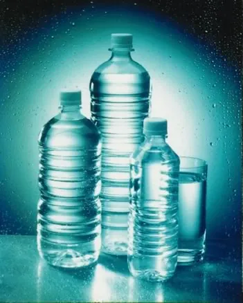
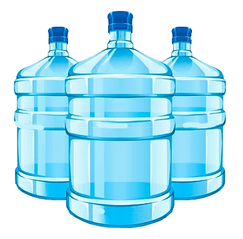
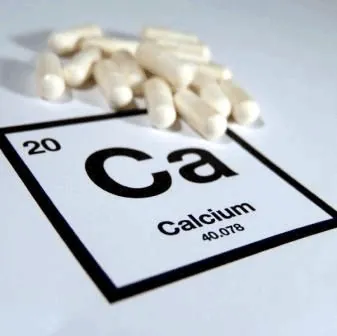
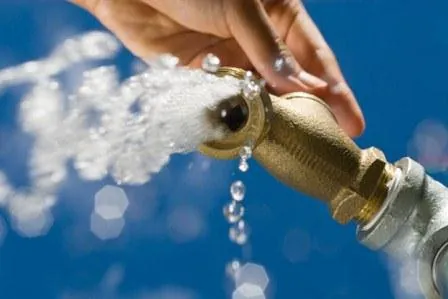
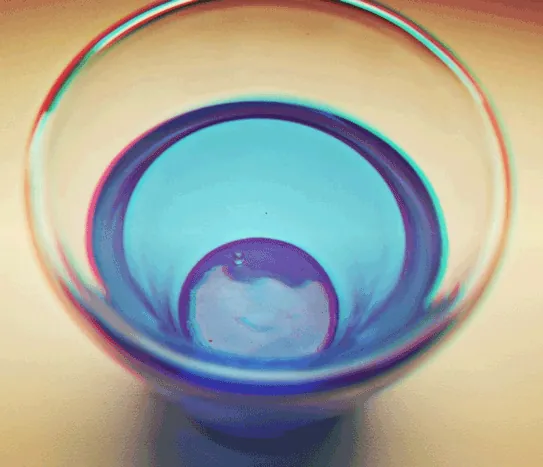
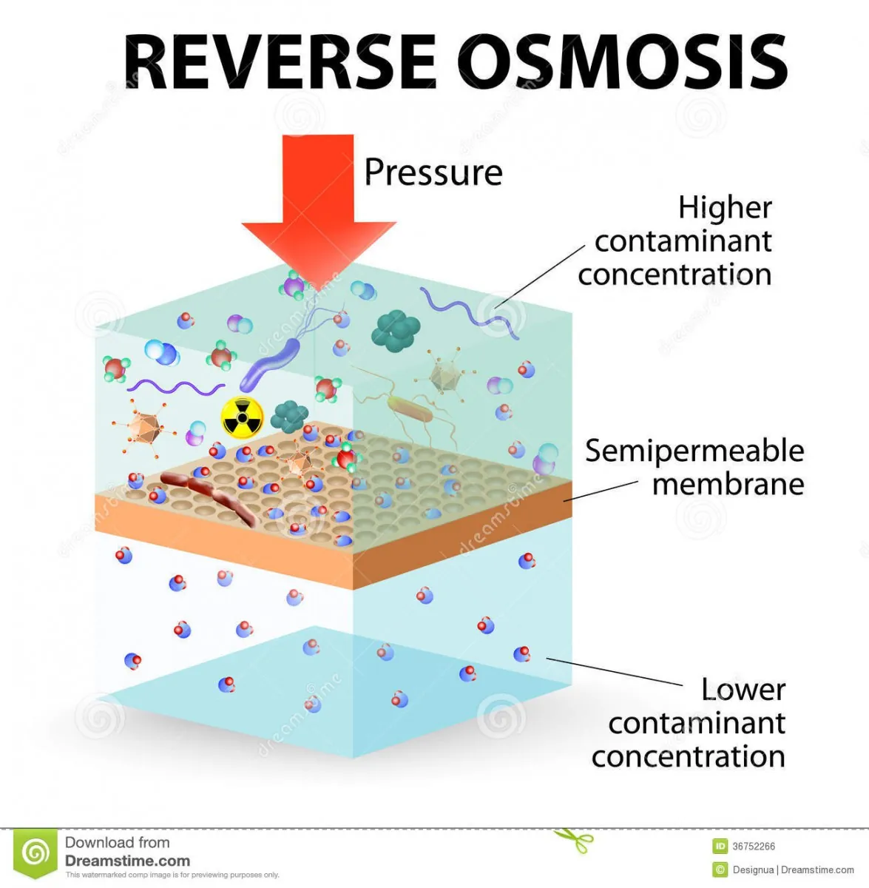
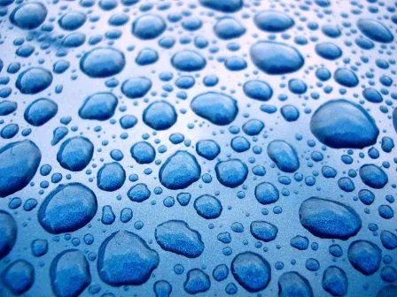
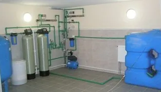

Статті про воду
Корисні матеріали про якість води, очищення та здоровий спосіб життя

Акції на воду
Умови першого замовлення води Crystal Water у Броварах і Києві: перша бутль для проби безкоштовно,…

Бутильована вода в раціоні
Чим бутильована вода відрізняється від побутового фільтра: очищення, контроль якості, зручність і витрати.…
Бутильована та мінеральна вода
Чим очищена питна вода відрізняється від мінеральної: джерело, мінералізація, призначення та як обрати…
Бутильована та фільтрована вода
Чим бутильована вода відрізняється від фільтрованої: як їх очищують, що з витратами, зручністю та…

Види води
Основні види води: природна, мінеральна, дистильована та очищена питна. Чим вони відрізняються, для чого…

Вода без хлору
Навіщо у водогін додають хлор, чому вода пахне басейном і як прибрати хлор: відстоювання, вугільний…

Вода в еко-тарі
Як вибрати воду в багаторазовій тарі: на що дивитися в маркуванні, як оцінити пляшку самостійно і чому…
Вода в офіс
Як розрахувати обсяг води для офісу, обрати між кулером і помпою, налагодити замовлення бутлів 19,9 л та…

Вода гуртом
Як замовити воду гуртом у Броварах і Києві для офісу, кафе чи клініки: розрахунок обсягу, застава за тару,…

Вода для відварів і настоїв
Яку воду брати для трав’яних відварів, настоїв і чаю: як вода впливає на смак, чим небезпечна…
Вода для дітей
Що дивитися на етикетці води для дітей, як підійти до води для сумішей і як дотримуватися гігієни бутлі та…
Вода для малюків
Яку воду обирати для дитини: чим відрізняється водопровідна й бутильована, як готувати суміші, що…
Вода для рослин
Чим корисний полив кімнатних рослин очищеною водою: жорсткість, хлор і наліт на горщиках, особливості води…
Вода для спортсменів
Вода для спортсменів: скільки й як пити до, під час і після тренування, на що дивитися при виборі води та…

Вода з бюветів Києва
Безкоштовна вода з бюветів Києва та Броварів: від чого залежить її якість, як обрати безпечне джерело, як…

Вода й кальцій
Яку роль відіграє кальцій у воді, що таке жорсткість і чому основним джерелом кальцію лишається…
Вода натщесерце
Склянка води після пробудження: звідки взялася звичка, як обрати температуру й обсяг, коли почекати зі…

Вода під час вагітності
Яку воду й скільки пити під час вагітності: загальні поради щодо питного режиму, на що дивитися під час…

Вода і контроль ваги
Чи допомагає вода худнути: що можна сказати про питний режим і контроль ваги, як замінити солодкі напої,…
Відео Києва 1983 року
Ретро-відео Києва 1983 року з висоти пташиного польоту: вулиці, зелень і широкий Дніпро. Як річка…
Відео: вода світу
Відео про підводний світ: океани, рифи та глибоководні мешканці. Розповідаємо, скільки води на Землі, чому…
Дистильована вода
Що таке дистильована вода, як її отримують, де застосовують і чому її не прийнято пити щодня. Відмінність…
Доставка води в Броварах
Як замовити доставку води в бутлях 19,9 л у Броварах і Києві: способи замовлення, графік роботи,…

Доставка води в Києві та Броварах
Як працює доставка питної води в Києві та Броварах: порядок замовлення, вартість бутля, застава, помпа,…

Доставка від виробника
Як обрати надійного постачальника питної води з доставкою: питання про технологію очищення, тару,…
Жива вода
Що називають «живою водою»: звідки пішов термін, як відрізнити маркетинг від фактів і за якими ознаками…
Зберігання бутлів із водою
Як зберігати бутлі з водою вдома й в офісі: світло, температура, гігієна, відкриття, догляд за помпою,…
Зворотний осмос
Зворотний осмос: плюси та мінуси. Розбираємо демінералізацію, стічні води домашніх систем, обслуговування…

Зворотний осмос
Як працює зворотний осмос: мембрана, тиск, що видаляється з води, чим метод відрізняється від вугільних…

Зворотний осмос і доставка
Вода після зворотного осмосу з доставкою в Київ і Бровари: як працює технологія, що вона прибирає, що…
Значення води в житті
Навіщо організму вода, як розпізнати нестачу рідини та побудувати простий питний режим. Практичні поради й…

Значення води для організмів
Яку роль вода відіграє в живих організмах і в організмі людини: розчинник, транспорт речовин,…
Знезараження води
Як знезаражувати воду вдома й у поході: кип'ятіння, фільтри, зворотний осмос, озонування. Що реально…
Кава під час вагітності
Чи можна пити каву під час вагітності: як кофеїн діє на організм, яка норма вважається допустимою, чим…
Кулер для води
Кулер для води: нагрів, охолодження, захист від дітей, підлогові та настільні моделі. Як обрати кулер для…

Мінеральна вода
Чим відрізняються столова, лікувально-столова та лікувальна мінеральна вода, як читати етикетку і коли…
Мінеральний склад води
Чим відрізняються артезіанська, мінеральна, очищена (осмос) і водопровідна вода: джерело, мінералізація,…
Навіщо потрібне очищення води
Чому питна вода має проходити правильне очищення: ризики «природної» води, роль зворотного осмосу,…

Наука про воду
Що важливо знати про воду: будова молекули, незвичайні властивості, кругообіг у природі та принципи…
Норма води на добу
Як розрахувати добову норму води за вагою, які чинники її змінюють, як зрозуміти, що рідини бракує, і як…

Норми води
Скільки води пити щодня: від чого залежить потреба, як прикинути орієнтир на кілограм ваги, ознаки нестачі…

Озонова стерилізація
Що таке озонування води, чим воно відрізняється від хлорування, як озон знезаражує воду і чому не лишає…
Осмос і дистиляція
Чим зворотний осмос відрізняється від дистиляції води: принцип роботи, склад на виході, смак, витрати…

Очищена вода
Що таке очищена вода, що містить водопровідна і чим вони відрізняються за смаком, жорсткістю та…

Перевірка якості води
Прості способи перевірити бутильовану воду самостійно: прозорість, запах, смак, накип, цілісність тари та…
ПЕТ-пляшки чи багаторазова тара
Чим одноразові ПЕТ-пляшки відрізняються від багаторазової тари 19,9 л, як впливають на довкілля та бюджет…
Питний режим
Навіщо організму вода, як вибудувати питний режим, які ознаки нестачі рідини бувають і чому важлива якість…

Пом’якшення води
Що таке жорстка вода, звідки береться накип і як працює пом’якшення: іонний обмін, зворотний осмос,…
Причини пити воду
Чому важливий регулярний питний режим, як вода пов’язана із самопочуттям, увагою та терморегуляцією, і як…
Прозора вода Байкалу
Чим відома прозора вода озера Байкал, чому вона така чиста і чим прозорість води відрізняється від її…
Простий аналіз води
Як працює популярний домашній тест води електролізом, що він реально показує, чим відрізняється від…
Роль води для організму
Чому організму потрібна вода, від чого залежить потреба в рідині та як вибудувати питний режим. Загальні…

Системи очищення води
Як працює багатоступеневе очищення води Crystal Water: від механічної фільтрації до осмосу й озонування,…

Смак води після осмосу
Який смак має вода після зворотного осмосу, чим вона відрізняється від водопровідної, чому здається…
Смак домашньої води
Чому вода з-під крана буває з присмаком, як покращити її смак фільтром і коли варто перейти на бутильовану…

Схема зворотного осмосу
Як влаштована схема зворотного осмосу: від передфільтра та вугільного блока до мембрани, накопичувального…
Фото краплі води
Як сфотографувати краплю води вдома: посуд і тло, штатив, ручний режим, витримка й діафрагма, робота з…
Фільтр у кулері
Чи потрібен фільтр кулеру для бутильованої води, як визначити строк заміни, як мити кулер і помпу та на що…
Холодна вода
Холодна вода й організм: коли прохолодний напій доречний у спеку та після тренування, кому варто бути…
Храми води України та світу
Розповідаємо про храми води: Кійомідзу-дера в Японії, храм Загван у Тунісі, святилище на Балі та церкву…

Хімічні добавки у воді
Які реагенти використовують у водопідготовці: хлор, коагулянти, фтор. Навіщо вони потрібні та які способи…

Чистота води та очищення
Чому прозора вода без запаху може містити домішки, які ступені очищення їх усувають і як працює зворотний…

Що знати під час купівлі води
Що перевірити під час купівлі бутильованої води: маркування, пломба, термін придатності, технологія…

Щодня літр води
Як виробити звичку пити достатньо води: загальні орієнтири щодо питного режиму, прості прийоми та роль…

Як замовити воду
Як замовити питну воду без зайвих запитань: чек-лист перевірки постачальника, розрахунок обсягу, порядок…
Як обрати воду для дому
Як обрати питну воду для дому: на що дивитися в джерелі й очищенні, як порівняти водопровід, фільтр і…

Як працює зворотний осмос
Як працює система зворотного осмосу: попередня фільтрація, вугільні блоки, мембрана, постфільтрація та чим…
Яка вода потрібна організму
Як відрізнити водопровідну, дистильовану, мінеральну та очищену питну воду, на що дивитися під час вибору…
Яку воду пити
Яка вода підходить для щоденного пиття: чим мінеральна відрізняється від очищеної та водопровідної, чому…
Якісна питна вода
За якими критеріями оцінювати якість питної води: безпека, pH, смак, прозорість. Як улаштована…
Якість води
Як оцінити якість питної води: прості домашні перевірки, їхні межі, лабораторний аналіз, вода з бювету та…